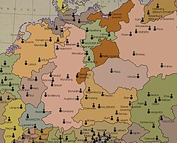

Une région au carrefour des puissances européennes
La Lorraine est une région à l’identité ancienne, située au carrefour de l’Europe. Longtemps indépendante, elle fut dirigée par une lignée de ducs puissants issus de la maison de Lorraine. Son histoire médiévale est marquée par une position stratégique entre le royaume de France et le Saint-Empire romain germanique, ce qui en fit une terre convoitée, souvent traversée par des armées et influencée par plusieurs cultures. Les villes de Metz, Nancy et Verdun y jouent un rôle politique et militaire majeur dès le Moyen Âge.
Au XVIᵉ et XVIIᵉ siècles, la Lorraine connaît des périodes de prospérité mais aussi de lourdes épreuves, notamment pendant la guerre de Trente Ans, où elle est ravagée par les conflits. À partir de 1766, après la mort de Stanislas Leszczynski, dernier duc souverain, la Lorraine est définitivement intégrée au royaume de France. Cette intégration marque le début d’un essor culturel remarquable, dont l’Art nouveau à Nancy est l’un des points culminants, porté par des artistes comme Émile Gallé et l’École de Nancy.
De l’indépendance ducale à l’intégration dans la France
L’époque moderne et contemporaine place de nouveau la Lorraine au centre des enjeux européens. Les départements de Moselle, Meurthe, Meuse et Vosges deviennent des lieux clés lors des conflits franco-allemands. L’Alsace-Lorraine est annexée par l’Allemagne en 1871 puis rendue à la France en 1918 après la Première Guerre mondiale, un événement où Verdun devient symbole de résistance. Au XXᵉ siècle, la Lorraine se transforme en grande région industrielle, notamment grâce au fer et à la sidérurgie, qui façonnent durablement son paysage économique, social et culturel.
A profondément transformé Nancy
A fait construire la Place Stanislas, aujourd’hui classée UNESCO
Protecteur des arts, modernisateur du duché
Jeanne
d’Arc
Cheffe de guerre, héroïne nationale
A conduit les armées françaises pendant la guerre de Cent Ans
A libéré Orléans en 1429
A permis le sacre de Charles VII à Reims
Devient une figure emblématique de la France et une sainte canonisée.
Émile
Gallé
Un des fondateurs de l’École de Nancy
Réputé pour ses créations en verre, ses lampes, ses meubles
Figure internationale de l’Art nouveau
A défendu Metz contre l’empereur Charles Quint en 1552
Grand stratège des guerres de Religion
Héros militaire majeur du XVIᵉ siècle
Aux origines du duché de Lorraine

Le duché de Lorraine prend forme au haut Moyen Âge, issu du partage de l’empire carolingien. Placée entre le royaume de France et le Saint-Empire romain germanique, la région devient une zone stratégique où se croisent influences latines et germaniques. Cette position particulière façonnera son identité politique et culturelle pendant des siècles.
Metz, cité libre et convoitée
Au Moyen Âge, Metz est une république autonome dirigée par ses bourgeois. Riche grâce au commerce et aux corporations, elle attire les convoitises. En 1552, la ville est annexée par la France après le siège mené par Charles Quint. Métropole fortifiée, elle devient un pilier militaire clé dans l’Est du royaume.
Les ducs de Lorraine : une dynastie puissante
La maison de Lorraine marquera l’histoire européenne. Parmi ses figures les plus célèbres, on retrouve René II, vainqueur des Bourguignons à Nancy en 1477, ou encore François III, devenu empereur sous le nom de François Ier après son mariage avec Marie-Thérèse d’Autriche. Leur héritage demeure profondément ancré dans l’identité régionale.
La bataille de Nancy (1477) : la fin de Charles le Téméraire
Le 5 janvier 1477, les troupes de René II affrontent l’armée bourguignonne. La mort de Charles le Téméraire met fin aux ambitions du puissant duché de Bourgogne. Cette victoire restaure l’indépendance lorraine et assure à Nancy une place importante dans l’histoire militaire européenne.
La Lorraine annexée par l’Allemagne (1871-1918)
Après la défaite de la France lors de la guerre franco-prussienne, l’Alsace et la Moselle sont annexées par l’Empire allemand. Cette période voit se développer un important essor industriel mais aussi un profond sentiment d’attachement à la culture française. En 1918, la région retrouve la France, marquant un tournant majeur pour son identité.
Le patrimoine lorrain : un héritage vivant
Châteaux, abbayes, verreries, traditions culinaires… le patrimoine lorrain témoigne d’une histoire riche et variée. La place Stanislas à Nancy, chef-d’œuvre du XVIIIe siècle, en est l’un des symboles les plus éclatants. Aujourd’hui encore, la région valorise cet héritage pour transmettre son passé aux générations futures.
Le patrimoine lorrain : un héritage vivant
Châteaux majestueux, abbayes séculaires, verreries renommées et traditions culinaires savoureuses : le patrimoine lorrain reflète une histoire d’une exceptionnelle richesse. À travers ses paysages et ses villes, la région dévoile un héritage façonné par des siècles de culture, d’échanges et de savoir-faire. Parmi ses trésors les plus emblématiques, la place Stanislas à Nancy occupe une place particulière. Véritable chef-d’œuvre du XVIIIᵉ siècle, classée au patrimoine mondial de l’UNESCO, elle symbolise à elle seule l’élégance et l’ambition artistique de la Lorraine des Lumières.
Mais l’héritage lorrain ne se limite pas à ses monuments. Il s’exprime aussi dans la finesse de ses vitraux, l’excellence de son art verrier porté par des maisons comme Daum, ou encore dans une gastronomie typique où la quiche, la mirabelle ou la bergamote racontent chacune une partie de l’âme régionale. Aujourd’hui encore, la Lorraine œuvre activement à préserver et mettre en valeur ce patrimoine multiple. Musées, restaurations, festivals et initiatives pédagogiques permettent de transmettre ce passé foisonnant aux générations futures, afin que l’histoire de la région continue de vivre et d’inspirer.
.jpg)
.jpg)